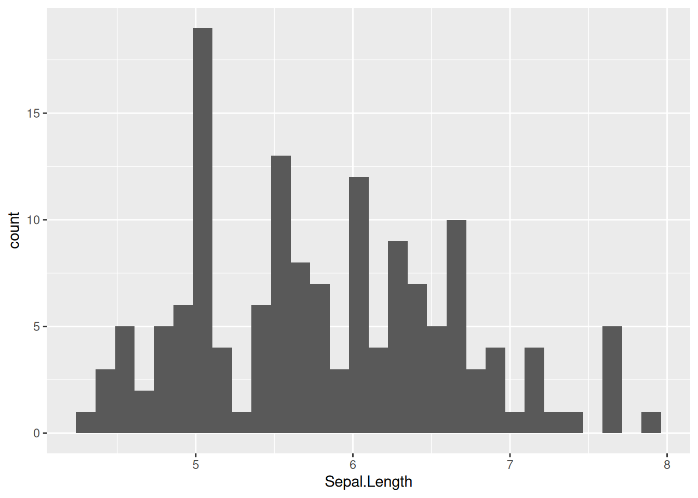
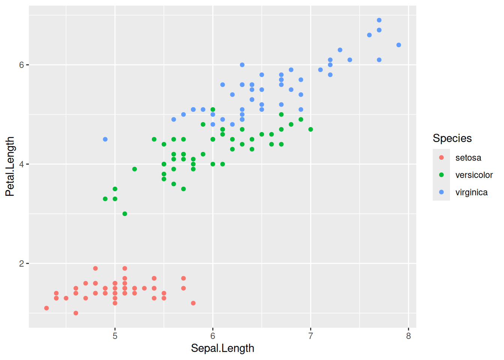
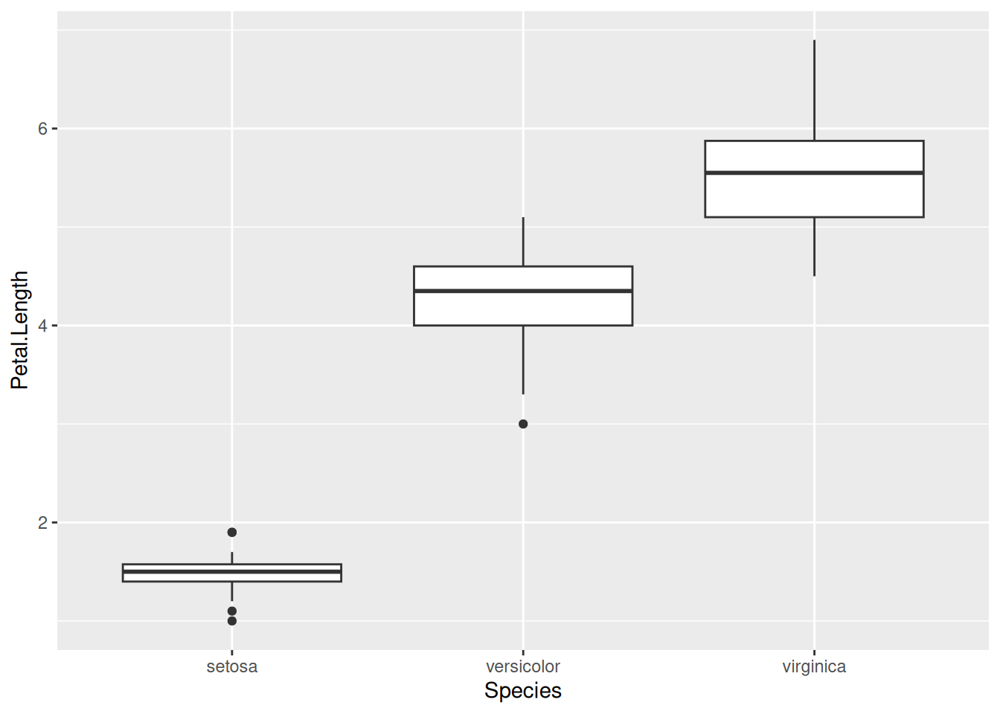
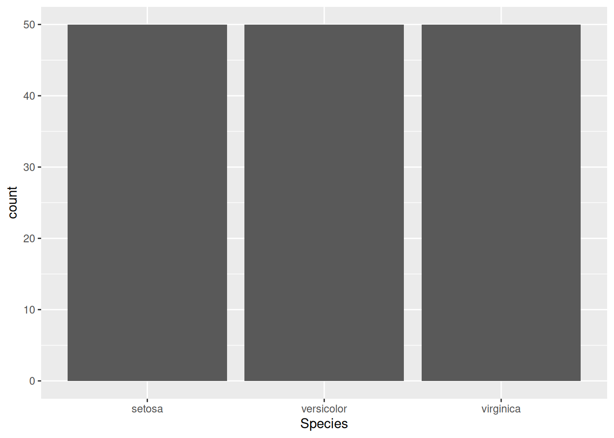
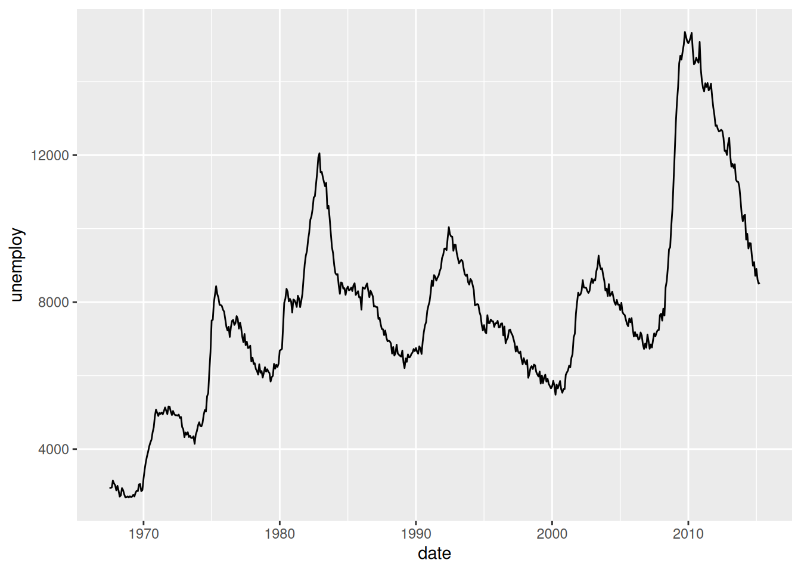

suppressPackageStartupMessages({
library(dplyr)
library(ggplot2)
})Lab 03 Ejercicios: Análisis exploratorio de datos
Preparacion
Seccion 1. Manipulación de datos
El dataset iris viene incluido con R. Es un conjunto de datos que contiene medidas de sépalos y pétalos de tres especies de flores de iris. Su estructura es la siguiente:
dplyr::glimpse(iris)Rows: 150
Columns: 5
$ Sepal.Length <dbl> 5.1, 4.9, 4.7, 4.6, 5.0, 5.4, 4.6, 5.0, 4.4, 4.9, 5.4, 4.…
$ Sepal.Width <dbl> 3.5, 3.0, 3.2, 3.1, 3.6, 3.9, 3.4, 3.4, 2.9, 3.1, 3.7, 3.…
$ Petal.Length <dbl> 1.4, 1.4, 1.3, 1.5, 1.4, 1.7, 1.4, 1.5, 1.4, 1.5, 1.5, 1.…
$ Petal.Width <dbl> 0.2, 0.2, 0.2, 0.2, 0.2, 0.4, 0.3, 0.2, 0.2, 0.1, 0.2, 0.…
$ Species <fct> setosa, setosa, setosa, setosa, setosa, setosa, setosa, s…iris2 <- dplyr::as_tibble(iris)Entonces, para cada expecie tenemos 4 variables medidas: longitud del sépalo, ancho del sépalo, longitud del pétalo y ancho del pétalo. La columna Species indica la especie a la que pertenece cada observación.
Q1 Resumir datos (promedios generales)
# Su código aquíprint(iris_resumen) avg_sepal_length avg_petal_length
1 5.843333 3.758Q2 Resumir datos por grupo
# Su código aquíprint(iris_resumen)# A tibble: 3 × 2
Species avg_sepal_length
<fct> <dbl>
1 setosa 5.01
2 versicolor 5.94
3 virginica 6.59Q3 Crear nuevas columnas
# Su código aquíprint(head(iris_razon, 10))# A tibble: 10 × 6
Sepal.Length Sepal.Width Petal.Length Petal.Width Species
<dbl> <dbl> <dbl> <dbl> <fct>
1 5.1 3.5 1.4 0.2 setosa
2 4.9 3 1.4 0.2 setosa
3 4.7 3.2 1.3 0.2 setosa
4 4.6 3.1 1.5 0.2 setosa
5 5 3.6 1.4 0.2 setosa
6 5.4 3.9 1.7 0.4 setosa
7 4.6 3.4 1.4 0.3 setosa
8 5 3.4 1.5 0.2 setosa
9 4.4 2.9 1.4 0.2 setosa
10 4.9 3.1 1.5 0.1 setosa
# ℹ 1 more variable: razon_sepal_length_width <dbl>Q4 Filtrar datos
# Su código aquíprint(head(iris_filtrado, 10))# A tibble: 10 × 5
Sepal.Length Sepal.Width Petal.Length Petal.Width Species
<dbl> <dbl> <dbl> <dbl> <fct>
1 5.1 3.5 1.4 0.2 setosa
2 4.9 3 1.4 0.2 setosa
3 4.7 3.2 1.3 0.2 setosa
4 4.6 3.1 1.5 0.2 setosa
5 5 3.6 1.4 0.2 setosa
6 5.4 3.9 1.7 0.4 setosa
7 4.6 3.4 1.4 0.3 setosa
8 5 3.4 1.5 0.2 setosa
9 4.4 2.9 1.4 0.2 setosa
10 4.9 3.1 1.5 0.1 setosa Q5 Contar por grupo
# Su código aquíprint(iris_contado)# A tibble: 3 × 2
Species count
<fct> <int>
1 setosa 50
2 versicolor 50
3 virginica 50Seccion 2: Visualización de datos
Seguimos usando iris2. Además, para el ejercicio de series de tiempo usamos el dataset economics, incluido con ggplot2, que contiene indicadores económicos mensuales de EE.UU. desde 1967.
dplyr::glimpse(ggplot2::economics)Rows: 574
Columns: 6
$ date <date> 1967-07-01, 1967-08-01, 1967-09-01, 1967-10-01, 1967-11-01, …
$ pce <dbl> 506.7, 509.8, 515.6, 512.2, 517.4, 525.1, 530.9, 533.6, 544.3…
$ pop <dbl> 198712, 198911, 199113, 199311, 199498, 199657, 199808, 19992…
$ psavert <dbl> 12.6, 12.6, 11.9, 12.9, 12.8, 11.8, 11.7, 12.3, 11.7, 12.3, 1…
$ uempmed <dbl> 4.5, 4.7, 4.6, 4.9, 4.7, 4.8, 5.1, 4.5, 4.1, 4.6, 4.4, 4.4, 4…
$ unemploy <dbl> 2944, 2945, 2958, 3143, 3066, 3018, 2878, 3001, 2877, 2709, 2…Q6 Histograma
# Su código aquíprint(iris_hist)`stat_bin()` using `bins = 30`. Pick better value `binwidth`.
Q7 Diagrama de dispersión
# Su código aquíprint(iris_scatter)
Q8 Boxplot
# Su código aquíprint(iris_boxplot)
Q9 Gráfico de barras
# Su código aquíprint(iris_barplot)
Q10 Gráfico de líneas
# Su código aquíprint(economics_lineplot)